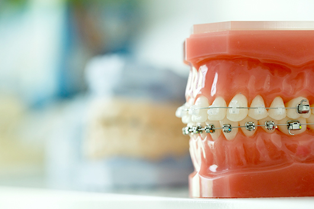

- ホーム
- 院長紹介・コンセプト
くらしま矯正歯科の院長紹介・コンセプト
目立たない裏側（裏側）矯正なら、「くらしま矯正歯科」へ
川崎市・たまプラーザの「くらしま矯正歯科」は、矯正装置が目立たない裏側矯正（舌側矯正）に特化した歯科医院です。全国に60名のみの日本矯正歯科学会認定医が診察を担当し、高い技術力で歯並びの乱れや不正咬合、それが引き起こす筋肉や機能上の問題点を改善していきます。

矯正治療にあたってハードルになるのが、歯の表面に装着される矯正装置の見た目です。当院は見えない矯正を得意としておりますので、矯正中も口元を気にせず笑顔でお過ごしいただけます。
当院のコンセプト
矯正中も自分らしい”ハッピースマイル“でいられる治療
「くらしま矯正歯科」は、目立たない裏側（舌側）矯正の豊富な実績を持つ、歯列矯正が得意な歯科医院です。
歯並びの乱れは虫歯や歯周病、姿勢の歪みなどの身体への悪影響もさることながら、「思いきり笑えない」「周囲の目が気になる」といったお気持ちの面での苦しみをもたらしてしまいます。
しかし、歯並び改善のために矯正治療を始めようと思っても、「矯正装置の見た目に抵抗がある」と一歩を踏み出せない患者さまが多いのが現状です。そのような方にご案内したいのが、目立ちにくく周囲に気づかれにくい当院の裏側矯正（舌側矯正）です。
25年間で3,000以上の症例を診てきた「くらしま矯正歯科」では、「患者さまとの対話」と「良好な関係性の構築」で不安や疑問を取り除き、二人三脚でお気持ち面でも満足できる治療に努めています。そのためにも、できるだけ明るくリラックスできる院内、いつでも相談しやすいサポート体制を整えて皆さまをお待ちしています。
何でも相談できて、治療が終わると思わず笑顔があふれてしまう。患者さまにとってそんな場所でありたいと私たちは願っています。
院長紹介
院長挨拶
院長 倉島茂樹（くらしましげき）
こんにちは。院長の倉島です。全国で60名※しかいない日本舌側矯正歯科学会認定医のひとりとして、歯列矯正に特化した治療を行っています。
※出典元：http://www.jloa.org/p/patient/recognition/
患者さまの歯並びを整えて筋肉や機能の問題を改善するとともに、お気持ちの面でも満足していただくためにも、高度な矯正治療の提供を目指し、日々研鑽しています。
矯正歯科治療を志した理由
歯科医になるうえで私が「矯正歯科治療」を選んだ理由は2つあります。
- 患者さまと長期的にお付き合いができるため
- 矯正治療の奥深さに興味を持っていたため
2～3回程度の通院で治療が終わってしまう虫歯治療とは異なり、矯正治療では長い期間にわたって患者さまと二人三脚で治療に取り組むことになります。人と接したりおしゃべりしたりすることが好きだった私にとって、深く長く患者さまと関係性を築ける矯正歯科治療は、とても魅力的な分野でした。
また「患者さまが現在の歯並びになった原因を探って、最適な治療法を考える」というロジカルな発想を必要とする点も、矯正歯科治療に興味を抱いた理由です。推理小説やパズルのような奥深さがあり、実際に歯並びがきれいにそろったときは、やりがいと喜びを感じます。
大切にしていることはコミュニケーションと笑顔
矯正歯科治療を行うなかで私が意識していることは、患者さまとのコミュニケーションと良好な関係性の構築です。
矯正歯科治療は、ドクターの一方的な治療ではうまく進められません。一人ひとりとしっかり向き合い、患者さまにも積極的に治療に参加していただくことで、一丸となってよりよい治療結果を得られるようになります。
患者さまのなかには歯科治療に不安を抱いている方も多いため、通院が苦痛にならないように仕事や学校、家族の話をしながら楽しく治療を進めていくことを心がけています。こういったムダに思えるような話の中から治療のヒントが見えてくることもあるのが、矯正歯科治療のおもしろいところです。
当院では患部を直すだけではなく、患者さまが心から元気になる「ハッピースマイル」を実現することコンセプトにしています。口元のコンプレックスを気にせず心から笑える――そんな毎日を叶えるために高い技術力で矯正治療と予防治療に取り組んでいます。
光がたっぷり差し込む明るい院内やアロマの香りなど、リラックスしながら楽しく治療を受けられる環境が当院の特長です。歯科医院が苦手な方でも、安心してご利用くださいね。
院長経歴
略歴
1995年
鶴見大学歯学部卒業
1995年
鶴見大学矯正学教室入局診療科助手
2001年
鶴見大学大学院歯学研究科（歯科矯正学専攻）修了 歯学博士号取得
2001年
日本矯正歯科学会認定医取得、舌側矯正専門歯科医院勤務
2004年
くらしま矯正歯科開設
所属学会・認定・校医など
日本矯正歯科学会認定医
日本舌側矯正歯科学会認定医
東京矯正歯科学会
日本口蓋裂学会
副院長経歴
略歴
1995年
鶴見大学歯学部卒業
1995年
都内一般歯科医院に勤務
1997年
鶴見大学矯正学教室入局診療科助手
2002年
在宅訪問歯科診療に従事
所属学会・認定・校医など
日本矯正歯科学会